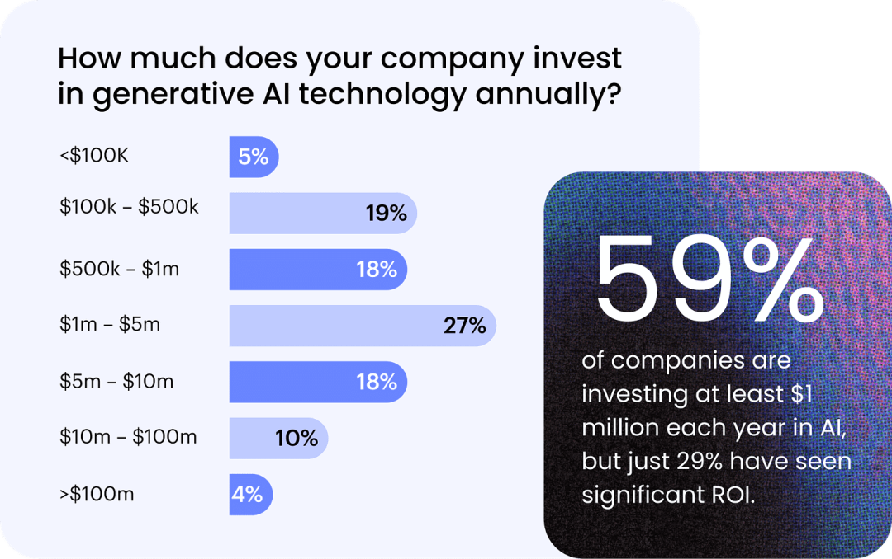
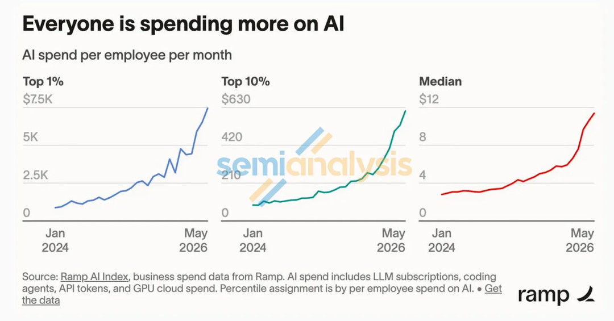
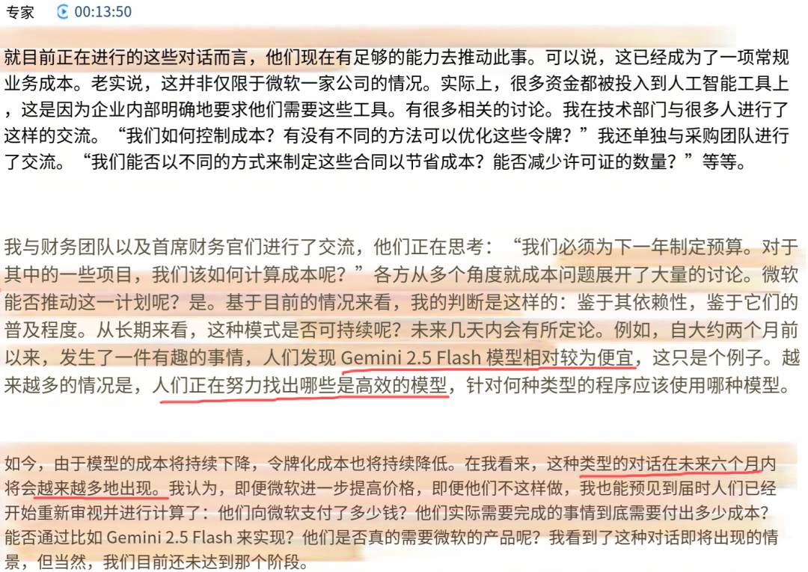
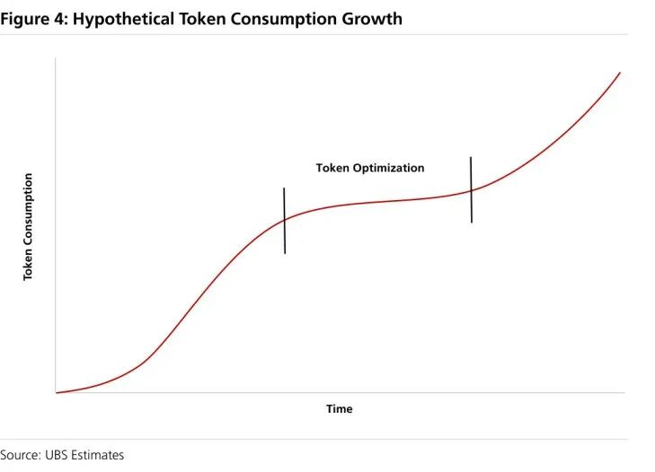
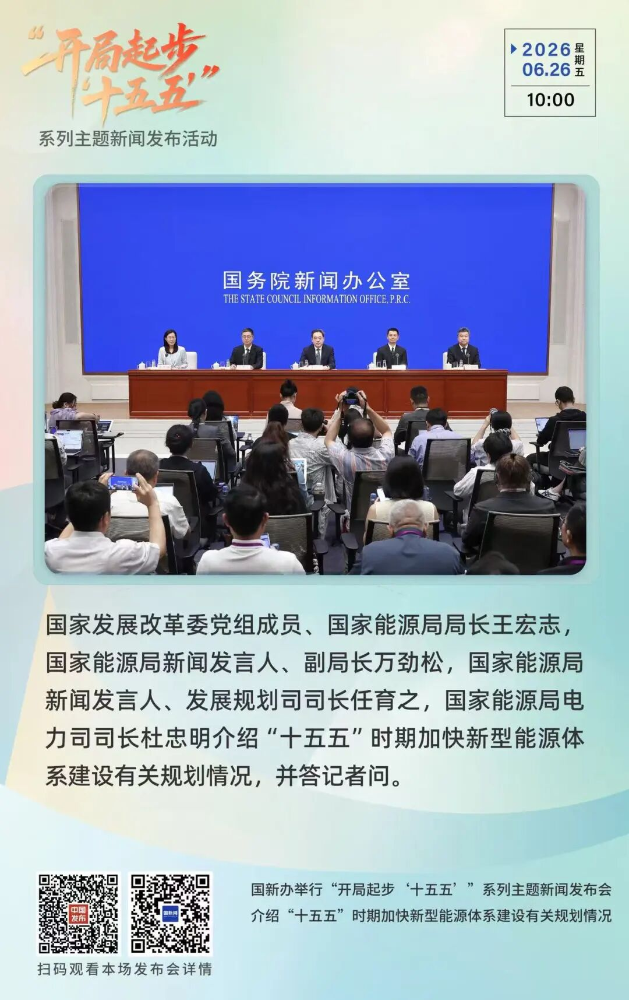

公众号文章摘要 2026-07-04
当日汇总
- 收录文章：4 篇
- 覆盖公众号：北向牧风国家能源局
- 高频实体/主题：AnthropicClaudeCodeFableGitHubCopilotGeminiCFOROITopRampIndexSemiAnalysisRAGUBSEstimatesUberIT
板块与风格观察
1. 新技术/降本线索
- AI算力/大模型：模型迭代和推理放量会倒逼算力、存储和网络效率提升，降本点在单位 token 成本、能耗和利用率。
2. 强势板块线索
- 连续两天上涨：待接入板块行情数据确认；原文暂无可直接判定的连续上涨线索。
- 当天涨幅最大：待接入当日板块涨幅数据；当前简报仅按公众号文本热度排序，不把热度等同于涨幅。
3. 公众号重复提及板块
| 排名 | 板块名称 | 提及频次 | 核心主体 |
|---|---|---|---|
| 1 | 能源/电力 | 合计 2篇/11次 | 国家能源局《从空白起步到引领全球！看中国水电的百年奋进之路》9次；北向牧风《连 Claude Code 都开始砍成本了....》2次 |
| 2 | AI算力/大模型 | 合计 1篇/37次 | 北向牧风《连 Claude Code 都开始砍成本了....》37次 |
| 3 | 水利/防汛减灾 | 合计 1篇/8次 | 国家能源局《从空白起步到引领全球！看中国水电的百年奋进之路》8次 |
| 4 | 航运 | 合计 1篇/2次 | 国家能源局《从空白起步到引领全球！看中国水电的百年奋进之路》2次 |
| 5 | 教育 | 合计 1篇/1次 | 国家能源局《从空白起步到引领全球！看中国水电的百年奋进之路》1次 |
4. 最近风格化所在
- 科技成长/AI硬件、涨价/周期修复、设备含量提升
5. 提及板块相关个股/公司
- 能源/电力：原文未明确提及个股/公司
- AI算力/大模型：原文未明确提及个股/公司
- 水利/防汛减灾：原文未明确提及个股/公司
- 航运：原文未明确提及个股/公司
- 教育：原文未明确提及个股/公司
共性后续跟踪
- 跟踪后续供需数据，区分短期交易担忧和中期产业订单
- 复核重点实体的公告、纪要或财报口径：Anthropic、Claude、Code、Fable、GitHub、Copilot
- 复核重点实体的公告、纪要或财报口径：China、Five-Year、Plan、Chinese、Unveiled、Speaking
- 复核重点实体的公告、纪要或财报口径：China、Wang、Hongzhi、National、Energy、This
- 补充国产替代链条：哪些 A 股公司处在文中提到的薄弱环节
- 拆分受益环节：前道设备、厂务洁净室、先进封装、量检测
按公众号归档
北向牧风1 篇连 Claude Code 都开始砍成本了....
连 Claude Code 都开始砍成本了....
- 公众号：北向牧风
- 发布时间：2026-07-04 07:20:00
- 原文：点击查看原文
一句话：图：59% 的公司每年在 AI 上砸至少 100 万美元，但只有 29% 说看到了像样的回报——钱花了，值不值还是个问号（来源：企业 AI 采用调研）
核心内容

核心内容：四个月就把一整年的 AI 预算烧光了，最后只能给每人每月摁一个 1500 美元的上限
利好板块/公司：利好板块AI算力/大模型相关公司/标的原文未明确点名

核心内容：基线会从 9 直接顶到 13、14 块去
利好板块/公司：利好板块AI算力/大模型相关公司/标的原文未明确点名
核心内容：市场上"FinOps for AI"这套说法，已经开始有人提了
利好板块/公司：利好板块AI算力/大模型相关公司/标的原文未明确点名
核心内容：板块提及：能源/电力：——好的数据中心选址、电力、审批那时候差不多耗尽，小型核电这类能撑下一段的新供给又还没成熟，建设速度会慢下来。到那会儿如果大家都在收紧 token，总算力够不够都不好说
利好板块/公司：利好板块AI算力/大模型能源/电力相关公司/标的原文未明确点名
核心内容：板块提及：AI算力/大模型：Anthropic 应用 AI 负责人William做了一个演讲
利好板块/公司：利好板块AI算力/大模型相关公司/标的原文未明确点名
核心内容：截图识别：主要板块：AI算力/大模型；截图上下文：专家 € 00:13:50；就目前正在进行的这些对话而言，他们现在有足够的能力去推动此事。可以说，这已经成为了一项常规。OCR 结果可能受截图清晰度影响，需以原图复核。

- 利好板块/公司：利好板块：AI算力/大模型；相关公司/标的：截图未识别到明确公司名称
核心内容：截图识别：主要板块：AI算力/大模型；截图上下文：Figure 4: Hypothetical Token Consumption Growth；四 Token Optimization。OCR 结果可能受截图清晰度影响，需以原图复核。

- 利好板块/公司：利好板块：AI算力/大模型；相关公司/标的：截图未识别到明确公司名称
关键实体
AnthropicClaudeCodeFableGitHubCopilotGeminiCFOROITopRampIndexSemiAnalysisRAGUBSEstimatesUberITGoogleFinOps关键数字/证据
- 谈到A厂把 Claude Code 的系统提示词一口气砍掉了八成——从 800 token 压到了 164 token
- 官方给的理由是新一代模型（Fable 5）够聪明了，喂太多指令和例子反而框住它，不如让它自己发挥
- 四个月就把一整年的 AI 预算烧光了，最后只能给每人每月摁一个 1500 美元的上限
- 1.发出去的席位，有没有人
- 而当初给企业画的饼，是 30% 到 50%
- 一个月人均 500 到 2000 美元 token
风险/分歧
- 这一轮行业层面的利空，很大程度上就是从这儿引出来的....
后续跟踪
- 跟踪后续供需数据，区分短期交易担忧和中期产业订单
- 复核重点实体的公告、纪要或财报口径：Anthropic、Claude、Code、Fable、GitHub、Copilot
国家能源局3 篇China SCIO︱China's new energy roadmap shifts focus from capacity expansion to system building、China Daily︱Energy system rejig on AI demand、从空白起步到引领全球！看中国水电的百年奋进之路
China SCIO︱China's new energy roadmap shifts focus from capacity expansion to system building
- 公众号：国家能源局
- 发布时间：2026-07-04 16:16:23
- 原文：点击查看原文
一句话：Unveiled last week, the plan aims to basically establish a clean, low-carbon, secure, and efficient new energy system by 2030.
核心内容
核心内容：Unveiled last week, the plan aims to basically establish a clean, low-carbon, secure, and efficient new energy system by 2030.
核心内容：Experts said the significance of the plan lies not only in its numerical targets, but also in what they reveal about the next stage of China's energy transition.
核心内容：He noted that rising electrification, growing renewable energy use, and the rapid adoption of electric vehicles have increased China's resilience to external energy shocks.
核心内容：The plan nevertheless reaffirms the role of conventional energy sources — including coal, oil, and natural gas — in maintaining system stability and ensuring reliable supply.
核心内容：Lyu said the blueprint provides policy certainty amid global energy market volatility and demonstrates that low-carbon development can be pursued alongside energy security.
核心内容：Yang said China is speeding up its energy transition not only to address climate change but also to create economic opportunities.
核心内容：截图识别：主要板块：能源/电力；截图上下文：' Rey >20268；ant »” 06.26 =。OCR 结果可能受截图清晰度影响，需以原图复核。

- 利好板块/公司：利好板块：能源/电力；相关公司/标的：截图未识别到明确公司名称
核心内容：截图识别：主要板块：能源/电力；截图上下文：9 国家购有局短信公众号是国家能源局新闻言传、 信息公开、服务群众的重要平台。；= .。OCR 结果可能受截图清晰度影响，需以原图复核。

- 利好板块/公司：利好板块：能源/电力；相关公司/标的：截图未识别到明确公司名称
关键实体
ChinaFive-YearPlanChineseUnveiledSpeakingFridayWangHongzhiNationalEnergyByNon-fossilExpertsLyuWenbinResearchInstituteDevelopmentReform关键数字/证据
- Unveiled last week, the plan aims to basically establish a clean, low-carbon, secure, and efficient new energy system by 2030.
风险/分歧
- 原文未强调明确风险。
后续跟踪
- 复核重点实体的公告、纪要或财报口径：China、Five-Year、Plan、Chinese、Unveiled、Speaking
China Daily︱Energy system rejig on AI demand
- 公众号：国家能源局
- 发布时间：2026-07-04 16:16:23
- 原文：点击查看原文
一句话："For example, generating a five-second high-definition video using artificial intelligence consumes as much electricity as charging 10 smartphones," Wang said.
核心内容
核心内容："For example, generating a five-second high-definition video using artificial intelligence consumes as much electricity as charging 10 smartphones," Wang said.
利好板块/公司：利好板块AI算力/大模型相关公司/标的原文未明确点名
核心内容：Furthermore, sweeping upgrades to distribution networks and smart microgrids will support the charging needs of over 110 million electric vehicles, it said.
利好板块/公司：利好板块AI算力/大模型相关公司/标的原文未明确点名
核心内容：The government aims to meet newly added electricity demand primarily through clean energy by developing a mix of wind, solar, hydropower, and nuclear power, it said.
利好板块/公司：利好板块AI算力/大模型相关公司/标的原文未明确点名
核心内容："In terms of ensuring energy supply, renewable energy has already become the main contributor to the country's domestic energy increments," Yi added.
利好板块/公司：利好板块AI算力/大模型相关公司/标的原文未明确点名
核心内容：截图识别：主要板块：能源/电力；截图上下文：9 国家购有局短信公众号是国家能源局新闻言传、 信息公开、服务群众的重要平台。；= .。OCR 结果可能受截图清晰度影响，需以原图复核。
- 利好板块/公司：利好板块：能源/电力；相关公司/标的：截图未识别到明确公司名称
关键实体
ChinaWangHongzhiNationalEnergyThisBeijingFridayByForInMeetingAccordingNEAFive-YearPlanTheYiYuechunRenewable关键数字/证据
- "For example, generating a five-second high-definition video using artificial intelligence consumes as much electricity as charging 10 smartphones," Wang said.
- Furthermore, sweeping upgrades to distribution networks and smart microgrids will support the charging needs of over 110 million electric vehicles, it said.
风险/分歧
- 原文未强调明确风险。
后续跟踪
- 复核重点实体的公告、纪要或财报口径：China、Wang、Hongzhi、National、Energy、This
从空白起步到引领全球！看中国水电的百年奋进之路
- 公众号：国家能源局
- 发布时间：2026-07-04 14:50:39
- 原文：点击查看原文
一句话：电站拥有独一无二的红色党建根基：1927年4月，云南省首个产业工人党支部在石龙坝厂区成立，也是当年云南15个地下党支部中唯一完全由产业工人组成的企业党支部，百年红色火种自此扎根水电一线
核心内容
核心内容：电站拥有独一无二的红色党建根基：1927年4月，云南省首个产业工人党支部在石龙坝厂区成立，也是当年云南15个地下党支部中唯一完全由产业工人组成的企业党支部，百年红色火种自此扎根水电一线
利好板块/公司：利好板块能源/电力水利/防汛减灾相关公司/标的原文未明确点名
核心内容：党员骨干牵头完成百年老旧机组常态化运维、防汛保电、工业遗产保护全流程攻坚，自主完成老旧设备国产化改造，摆脱进口备件依赖
利好板块/公司：利好板块水利/防汛减灾相关公司/标的原文未明确点名
核心内容：截至2025年底，三峡电站累计发电量突破1.8万亿千瓦时，相当于节约标准煤约5.4亿吨，减排二氧化碳约14.8亿吨
利好板块/公司：利好板块能源/电力水利/防汛减灾相关公司/标的原文未明确点名
核心内容：三峡水电站1994年正式开工，2003年首批机组并网，2012年全部机组投产，总装机2250万千瓦，是当前全球总装机容量最大水电站，集防洪、发电、航运、水资源利用多重功能于一体
利好板块/公司：利好板块水利/防汛减灾相关公司/标的原文未明确点名
核心内容：电站正式运维阶段，各运行党支部持续传承工程建设时期红色优良传统，划定设立党员设备检修责任区，党员骨干牵头实施老旧机组国产化升级改造、通航建筑物提质改造、智能监控系统迭代升级等重点项目
利好板块/公司：利好板块能源/电力水利/防汛减灾相关公司/标的原文未明确点名
核心内容：截至6月9日，白鹤滩电厂实现连续安全生产2000天，累计发电量超2500亿千瓦时
利好板块/公司：利好板块能源/电力水利/防汛减灾相关公司/标的原文未明确点名
核心内容：板块提及：能源/电力：三峡工程筑牢全国能源稳压底座 白鹤滩登顶世界水电技术巅峰 葛洲坝开启长江干流筑坝先河 四座里程碑式水电工程
利好板块/公司：利好板块能源/电力相关公司/标的原文未明确点名
核心内容：板块提及：水利/防汛减灾：党员骨干牵头完成百年老旧机组常态化运维、防汛保电、工业遗产保护全流程攻坚，自主完成老旧设备国产化改造，摆脱进口备件依赖；2026年，石龙坝运维部党员团队获评“全国工人先锋号”，以党员先锋岗为载体，把百年红色基因转化为守护民族水电工业遗产、保障区域绿色供电的实干动力。截至2025年底，电站累计安全发电超10亿千瓦时，持续发挥科普、保供、红色教育三重价值，树立起百年水电党建融合发展标杆
利好板块/公司：利好板块能源/电力水利/防汛减灾相关公司/标的原文未明确点名
核心内容：板块提及：航运：三峡水电站1994年正式开工，2003年首批机组并网，2012年全部机组投产，总装机2250万千瓦，是当前全球总装机容量最大水电站，集防洪、发电、航运、水资源利用多重功能于一体。工程建设全程自主完成勘测、设计、施工、设备制造，多年平均发电近900亿千瓦时，丰水年提供超千亿千瓦时清洁电能，大幅削减全国燃煤碳排放，守住长江中下游亿万群众防洪安全底线
利好板块/公司：利好板块水利/防汛减灾相关公司/标的原文未明确点名
核心内容：板块提及：教育：党员骨干牵头完成百年老旧机组常态化运维、防汛保电、工业遗产保护全流程攻坚，自主完成老旧设备国产化改造，摆脱进口备件依赖；2026年，石龙坝运维部党员团队获评“全国工人先锋号”，以党员先锋岗为载体，把百年红色基因转化为守护民族水电工业遗产、保障区域绿色供电的实干动力。截至2025年底，电站累计安全发电超10亿千瓦时，持续发挥科普、保供、红色教育三重价值，树立起百年水电党建融合发展标杆
利好板块/公司：利好板块能源/电力水利/防汛减灾相关公司/标的原文未明确点名
关键实体
待补充关键数字/证据
- 石龙坝水电站1910年动工、1912年正式发电，产出中国大陆第一度水电，是国人自筹资本、自主兴建的首座水电站，终结中国无水电的历史，被誉为中国水电事业的摇篮
- 电站拥有独一无二的红色党建根基：1927年4月，云南省首个产业工人党支部在石龙坝厂区成立，也是当年云南15个地下党支部中唯一完全由产业工人组成的企业党支部，百年红色火种自此扎根水电一线
- 和平建设时期，一代代党员接续传承初心，电站运维部现有18名职工，其中共产党员6名，组建党员抢修专班、红色宣讲队，深挖百年电站红色史料，打造党史现场教学基地
- 2026年，石龙坝运维部党员团队获评“全国工人先锋号”，以党员先锋岗为载体，把百年红色基因转化为守护民族水电工业遗产、保障区域绿色供电的实干动力
- 截至2025年底，电站累计安全发电超10亿千瓦时，持续发挥科普、保供、红色教育三重价值，树立起百年水电党建融合发展标杆
- 三峡水电站1994年正式开工，2003年首批机组并网，2012年全部机组投产，总装机2250万千瓦，是当前全球总装机容量最大水电站，集防洪、发电、航运、水资源利用多重功能于一体
- 工程建设全程自主完成勘测、设计、施工、设备制造，多年平均发电近900亿千瓦时，丰水年提供超千亿千瓦时清洁电能，大幅削减全国燃煤碳排放，守住长江中下游亿万群众防洪安全底线
- 截至2025年底，三峡电站累计发电量突破1.8万亿千瓦时，相当于节约标准煤约5.4亿吨，减排二氧化碳约14.8亿吨
风险/分歧
- 原文未强调明确风险。
后续跟踪
- 补充国产替代链条：哪些 A 股公司处在文中提到的薄弱环节
- 拆分受益环节：前道设备、厂务洁净室、先进封装、量检测